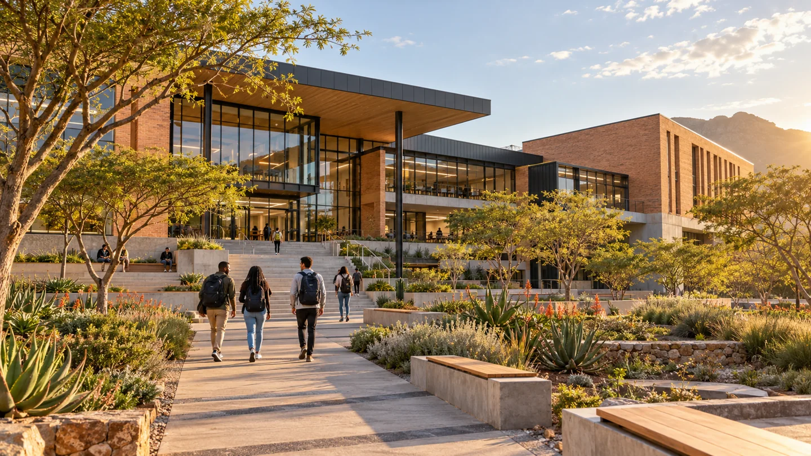
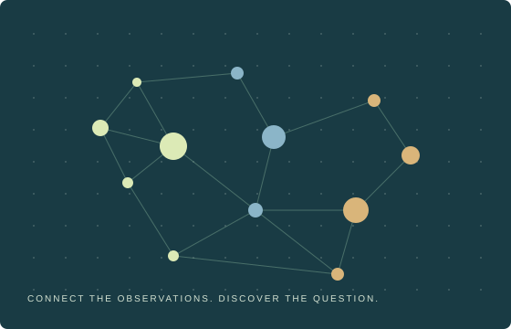

Data Science
& Informatics
A four-year honours study path connecting statistics, programming and applied problem solving.
Explore the study pathDATA SCIENCE & INFORMATICS
Turn curiosity into insight. Explore a department where computing, statistics and human ideas come together.

Think critically.
Create confidently.
YOUR IDEAS START HERE
Find the tools to ask better questions, discover patterns and build useful digital experiences.
A four-year honours study path connecting statistics, programming and applied problem solving.
Explore the study pathWork through modules in web development, databases, machine learning and data visualisation.
Browse the modulesSee how an algorithm discovers groups in data with our step-by-step clustering experiment.
Open the learning labIDEAS WITH PURPOSE
Explore research themes in sustainable communities, responsible artificial intelligence and better public services.
Discover our research
TAKE A CLOSER LOOK
A short visual introduction to the data science journey. Use the player controls to play, pause or enable captions.
Original 24-second department film · captions and transcript included.
Welcome to Data Science and Informatics at MIDRAND UNIVERSITY. Start with a question. Collect and clean the data. Explore patterns. Build and evaluate a model. Communicate evidence clearly. Use data responsibly. Learn through practical projects. Connect ideas with real questions. Your next insight starts here. Academic prototype for DSI236.
A data science journey / MIDRAND UNIVERSITY
THE DEPARTMENT NOTICEBOARD
Sample activities for the department community. Save an event reminder to your own calendar.
14:00–15:00 · Computing Lab 2 · Beginner friendly
10:00–12:00 · Innovation Studio · All years welcome
Illustrative academic events. Saving a reminder downloads an .ics file; it does not register attendance.